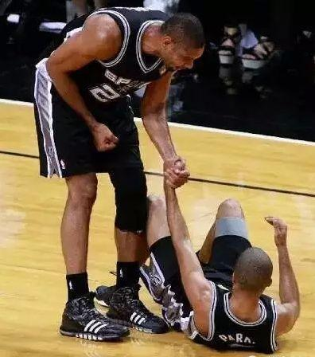

勇士在克利夫兰击败骑士，获得NBA2017-18赛季的总冠军。
12天前，在东决抢七战中，詹姆斯打满全场，在他熟悉的波士顿北岸花园球馆击败凯尔特人，连续八年进入总决赛。年轻的教练，年轻的球员，这支年轻的绿衫军在缺少了主力欧文和海沃德，不被所有人看好的情况下，凭借顽强的毅力，杀入到东部决赛，还差点将东部独裁的皇帝挑落下马。这赛季重要的引援海沃德和欧文都赛季报销，新秀塔图姆打出令人震惊的表现，但对手终究是詹姆斯。詹姆斯拖着莫里斯完成上篮二加一，将比赛杀死。这一瞬间，人们觉得，这个已经打了接近十五年的男人，依旧如他巅峰时期那么强。年轻的凯尔特人虽败犹荣，未来的他们拥有无限的可能。
11天前，在西决抢七战中，勇士击败火箭，连续四年与骑士会师总决赛。在西部半决赛火箭击败爵士之后，爵士队的米切尔对克里斯保罗说：
“去拿你的第一个总冠军吧”
长期统治的独裁者总会迎来挑战者，而火箭从赛季组建之初就是来击败勇士的。克里斯保罗在13年的职业生涯中终于打进了西部决赛，但他的目标绝不止于此。在西决G5与勇士拼到最后一刻，取得天王山之战的胜利，但是保罗旧伤复发，无法参加后面的比赛。在哈登独自带队的情况下，连续断送两场好局。在看到库里投的三分球颠进篮筐的时候，在替补席坐着的保罗用力拍打了旁边的座椅，这是他对于13年等待的愤慨和无奈。如果他能上场的话，也许结局可能会不一样。但是生活就是这样玩弄了他，太可惜了，克里斯保罗，真是太可惜了。
亚当萧华导演的《骑勇大战》第四季如期上演，与以往不同的是，这一次，克利夫兰已经没有了凯里欧文，詹姆斯一个人得面对勇士三叉戟。人们都会认为总决赛将会是一边倒的趋势，然后第一场比赛出乎了所有人的预料。詹姆斯在一次上篮中，被防守的格林用手插中眼睛，眼睛出现淤血，视力受到影响，但他依然坚持下来，如天神下凡一般全场砍下51分，这是NBA彩色转播自迈克尔乔丹以来第一个总决赛50+，借用伯德说过的一句话：
“那一晚，是上帝穿着23号球衣”，
但是关键时刻希尔罚球不中，JR鬼使神差般的抢下前场篮板后往外线跑，阴差阳错地断送了这场伟大的比赛。詹姆斯虽败犹荣，这场总决赛G1，定将如托马斯瘸腿单节25分、迈克尔乔丹流感之战、阿伦艾弗森跨越泰伦卢一般，镌刻在总决赛的历史经典之上。
在绝对的实力差距面前，勇士在后面的比赛中以摧枯拉朽之势，4-0击败骑士，夺得总冠军。四年三冠，勇士已经如同90年代的红色公牛以及世纪初的紫金湖人一样，搭建起一个伟大的王朝。库里还是没有拿到FMVP，勇士队是小球时代的代表，库里作为勇士的基石，是金州蓝色海洋的主人，值得一个FMVP，至少，比起投敌的杜兰特，更加值得。毕竟，俄克拉荷马，怕是再也回不去了。
詹姆斯在此次季后赛中，两轮抢七打满全场、绝杀猛龙、总决赛G1狂砍51分，这次自迈克尔乔丹以来最伟大的季后赛个人表演，也是一段悲壮的英雄史诗。他已经足够伟大，伟大到能够排进历史前五，甚至前二，也许在他退役的时候，人们会评价他为21世纪以来最伟大的篮球运动员。但是他的整个职业生涯，想要追赶的，是那个悬挂在芝加哥联合球馆上方红色23号球衣的主人，是那个被誉为篮球场上的上帝的人。
不知道这是否是詹姆斯最后一次在骑士打球，他八年前选择将天赋带往迈阿密，引来无数骂名。回到克利夫兰为家乡带来第一座总冠军，以及这几年的表现，差不多已经为自己洗白，他真的已经不欠这座城市什么了，夏天的无论做出什么选择也应该会受到人们的尊重。背不起千秋骂名，便担不起万古流芳。
格林插眼防守，帕楚里亚垫脚，这不是篮球应该有的样子。在别人摔倒的时候，你应该伸出一只手拉他起来，无论是队友还是对手。

生活永远大于篮球，This is why we play !